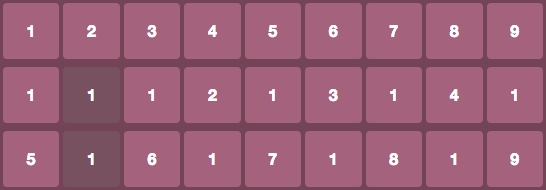
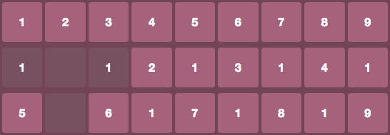
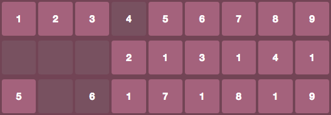

Choose two cells that exactly sum up to 10 (6+4) or are same number (8-8). Continue checking cells until one or less are left.
If you are stuck, you can remove up to any three single cells, or add more rows.
* Pick two cells that are horizontally or vertically adjacent.

* You can also pick two cells that are on same horizontal and vertical line if there are only crossed cells inbetween.

* Two cells from adjacent columns count too. The cells are 'next to each other' if one cell is last of a column and other is first of the next column. There can be crossed cells inbetween.
